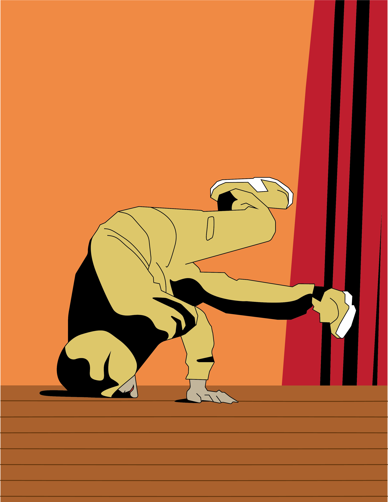

Lineart

The lineart is based on a figure
of me in middle school holding
a baby freeze. I used warm colors
to express the heat and intensity
of the moment when performing on stage.
A little smirk on my face depicts the
emotional state of the moment.
And the strong black shadows
show that the spotlight is on me.